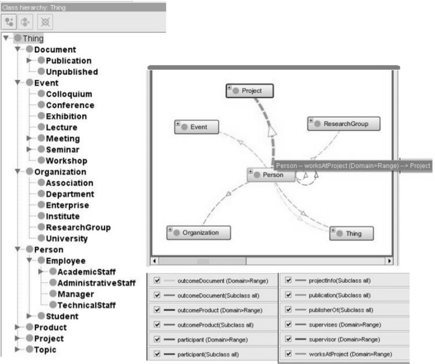

В настоящее время термин «онтология» переместился в область информационных технологий, где был использован рядом исследовательских сообществ по искусственному интеллекту вначале в области инженерии знаний, в обработке естественных языков, а затем в представлении знаний.
В конце 1990-х — начале 2000-х годов понятие онтологии также стало широко использоваться в таких областях, как интеллектуальная интеграция информации, поиск информации в Интернете и управление знаниями. Позже онтологии стали рассматриваться в качестве ключевого элемента в проекте семантического веба — нового этапа развития сети World Wide Web. Если существующая Web-сеть — это огромное множество документов, которые связаны перекрестными ссылками, то создаваемый семантический веб должен добавить к существующей сети множество онтологий и метаописаний знаний, содержащихся в документах Web-сети (включая стандарты и программные инструменты).
Понимание термина «онтология» зависит от контекста и целей его использования. В целом онтология состоит из иерархии понятий предметной области, связей между ними и законов, которые действуют в рамках этой модели. Онтология строится как сеть, состоящая из концептов и связей между ними. Связи могут быть различного типа (например, «является», «состоит из», «является исполнителем» и т. п.). Для выполнения роли общего языка будет включать в себя словарь (множество слов/лексических единиц) и набор определений понятий (формальных, на языке логической теории, или неформальных), задающих смысл элементов словаря. Связи между словарем (знаками) и семантикой ограничивают множество возможных интерпретаций знаков. Например, после установки связи между словом «Ягуар» и интенсиональным определением «хищное животное семейства кошек» мы исключаем из множества возможных интерпретаций этого слова машины и напитки. В результате онтологии позволяют правильно соотносить знаки, используемые людьми и компьютерами, с понятиями (семантическими моделями) и обозначаемыми объектами реального мира
Особо важным характеристическим свойством онтологии является наличие родовидовых отношений между классами объектов — таксономии классов. Например, в онтологии организации, таксономия понятия «Деятельность» выглядит следующим образом:
Именно благодаря родовидовым отношениям удается описать содержание понятия, дать его интенсиональное определение. Некоторые примеры таких определений для понятий из таксономии деятельности:
Мероприятие— уникальная деятельность (родовое понятие), выполняемая для решения какой-либо задачи (характеристические признаки);
Операция— повторяющееся (характеристический признак) элементарное действие (родовое понятие), способность реализации которого поддерживается в организации;
Проект— уникальная деятельность (родовое понятие), направленная на получение определенного результата и/или достижения цели, состоящая из совокупности скоординированных и управляемых мероприятий с начальной и конечной датами, соответствующая конкретным требованиям, включающим ограничения по срокам, стоимости и ресурсам (характеристические признаки);
Процесс (деловой процесс) — регулярная деятельность (родовое понятие), представляющая собой повторяющуюся последовательность взаимосвязанных операций, направленная на получение определенного результата (характеристические признаки). Для пояснения роли онтологии в коммуникации можно расширить формальное определение онтологии, введя в него словарь:
O = {C, R, A, L, F, G, H},
где L = LC ∪ LR — словарь онтологии, содержащий набор лексических единиц (знаков) для понятий LC и набор знаков для отношений LR; C — набор понятий онтологии; R — отношения между понятиями онтологии; A — набор аксиом онтологии; F и G — функции ссылок такие, которые связывают наборы лексических единиц {Lj} ⊂ L c наборами понятий и отношений, на которые они соответственно ссылаются в данной онтологии. При этом одна лексическая единица может ссылаться на несколько понятий или отношений, и одно понятие или отношение может ссылаться на несколько лексических единиц; H — фиксирует таксономический характер отношений (связей), при котором понятия онтологии связаны нерефлексивными, ациклическими, транзитивными отношениями H ⊂ C x C. Выражение H (C1, C2) означает, что понятие C1 является подпонятием C2.
Кроме повышения эффективности коммуникаций, одним из ключевых преимуществ онтологии является возможность интеграции разнородной информации. Онтология задает структуру базы знаний организации, обеспечивая доступ к ее содержимому, предоставляет словарь для описания документов (контента) и профилей компетентности сотрудников, выступает общей схемой для интеграции различных баз данных (рис. 7.3). В результате, при возникновении потребности в знаниях сотруднику не требуется осуществлять поиск по разным источникам. Онтология позволит ему через один интерфейс получить доступ ко всем необходимым знаниям по требуемой теме, вне зависимости от формы представления знаний.
7.2.1Классификация по объекту концептуализации
В рамках классификации по объекту концептуализации выделяют четыре уровня (рис. 4): онтология представления, онтология верхнего уровня, онтология предметной области и прикладная онтология.
Начнем рассмотрение с предметных онтологий, с которыми, как правило, в первую очередь сталкиваются люди, знакомящиеся с онтологиями. Потом поднимемся к более абстрактным онтологиям (верхнего уровня), рассмотрим более конкретные (прикладные), а в завершение остановимся на онтологиях представления, которые, в основном, актуальны для специалистов в инженерии знаний и помогают в выборе языков представления знаний.
7.2.2 Онтология предметной области
Другое название — онтология домена (от англ. Domain) или доменная онтология. Область охвата таких онтологий ограничена одной предметной областью (доменом), например, авиация, медицина, культура, дистанционное обучение, организация. Онтология предметной области обобщает понятия, использующиеся в некоторых задачах домена, абстрагируясь от самих задач (так, онтология автомобилей независима от любых особенностей конкретных марок машин). Во многих дисциплинах сейчас разрабатываются стандартные онтологии, которые могут использоваться экспертами по предметным областям для совместного использования и аннотирования информации в своей области.
Например, в области медицины созданы большие стандартные, структурированные словари, такие как SNOMED CT (Systematized Nomenclature of Medicine — Clinical Terms — систематизированная номенклатура медицины — клиническая терминология и UMLS (Unified Medical Language System — система унифицированного медицинского языка), онтологии по многим разделам, например, генная онтология (рис. 5).
Другим примером предметной онтологии является онтология исследовательской деятельности в области семантического веба — SWRC (Semantic Web Research Community) ontology. Данная онтология включает в себя такие понятия, как человек, организация, публикация, научная группа, конференция, семинар и т. п. (рис. 6).

7.2.3 Онтология верхнего уровняЕе назначение — в создании единой «правильной» онтологии, фиксирующей знания, общие для нескольких предметных областей, и в многократном использовании данной онтологии. Существует несколько крупных онтологий верхнего уровня: Cyc, DOLCE, SUMO, онтология Джона Совы (J. Sowa) и другие. Но в целом попытки создать онтологию верхнего уровня на все случаи жизни пока не привели к ожидаемым результатам. Многие онтологии верхнего уровня похожи друг на друга. Они содержат одни и те же концепты: сущность, явление, процесс, объект, роль, пространство, время, материя, событие, действие и т. п. Рассмотрим в качестве примера DOLCE (Descriptive Ontology for Linguistic and Cognitive Engineering) — первую из онтологий в библиотеке базовых онтологий проекта WonderWeb (http://wonderweb.man.ac.uk/)
Онтологию DOLCE предполагается применять в Semantic Web для согласования между интеллектуальными агентами, использующими разную терминологию. При этом онтология не претендует на звание универсальной, стандартной или общей. Основная цель разработчиков — создать модель, помогающую при сравнении и объяснении связей с другими онтологиями библиотеки онтологий WonderWeb, а также для выявления скрытых допущений, лежащих в основе существующих онтологий и лингвистических ресурсов, таких как WordNet. DOLCE имеет когнитивный уклон, поскольку фиксирует онтологические категории естественного языка и знания «здравого смысла».
В основу процесса проектирования легло фундаментальное философское разделение всех сущностей на универсалии (сущности, потенциально или реально имеющие экземпляры) и индивиды (или частности), которые не имеют и не могут иметь экземпляров. DOLCE — онтология индивидов, в том смысле, что область описания ограничена только ими. В качестве примера универсалии можно привести понятие «собака» (оно имеет множество экземпляров, конкретных примеров в окружающем мире). В отличие от этого понятия, понятие «время» скорее рассматривается как индивид (едва ли кому-то понадобится трактовать «время» как множество различных сущностей, конечно, если речь не идет о параллельных мирах).
Еще одна черта DOLCE (также заимствованная разработчиками из философии) — явное разделение на «статические» и «динамические» сущности. Различие между ними состоит в том, что «статические» сущности имеются в наличии целиком и неизменно в некотором фиксированном промежутке времени (например, стол или дом в течение периода своего существования). «Динамические» разворачиваются во времени и в каждый момент в некотором временном интервале они могут быть различными, по-разному себя проявлять, иметь разный состав (например: ураган или период раннего Ренессанса), однако при этом их идентичность сохраняется.
Такое разделение на «объект» и «процесс» весьма условно, и здесь прослеживается когнитивный уклон DOLCE. Оно привело к тому, что в онтологии определены два типа отношения ЧАСТЬ-ЦЕЛОЕ. Первое никак не зависит от времени, второе имеет временной индекс, определяющий, в каких временных рамках отношение действует. Подобное «раздвоение» наблюдается и для отношения «КАЧЕСТВО — ОБЛАДАТЕЛЬ КАЧЕСТВА». Другие базовые отношения онтологии: УЧАСТНИК-ПРОЦЕСС, КОМПОНЕНТ-ЦЕЛОЕ (компонент входит в состав целого) и отношение зависимости имеют временной индекс. Для сравнения, в онтологии OpenCyc нет явного деления на «Статическое» и «Динамическое». Поэтому среди множества отношений в разделе «Части объектов» нет отношения, учитывающего временной аспект: возможное непостоянство данного отношения.
7.2.4 Прикладная онтология
Назначение такой онтологии в том, чтобы описать концептуальную модель конкретной задачи или приложения. Прикладные онтологии содержат необходимые в конкретном приложении понятия, заимствованные из одной или нескольких онтологий предметных областей, а также понятия, тесно связанные с решаемыми задачами.
Например, онтология организации для задач организационного проектирования может иметь свои особенности. Продолжим рассматривать онтологию, предложенную компанией «Бизнес Инжиниринг Групп». Для коммерческих организаций состав задач оргпроектирования, для решения которых используется онтология, следующий:
1. Стратегическая фокусировка бизнес-системы: идентификация стратегий, «Контроль качества» стратегий, идентификация системы стратегических показателей.
2. Формирование оптимальной организационно-функциональной структуры: идентификация существующей организационно-функциональной структуры, анализ существующей организационно-функциональной структуры, разработка функционала и системы процессов бизнес-системы, разработка/оптимизация оргструктуры и распределения ответственности, выпуск и актуализация организационной документации по ОФМ.
3. Разработка, реинжиниринг и непрерывное совершенствование процессов: идентификация и описание процессов, анализ процессов, оптимизация процессов, выпуск и поддержание в актуализированном состоянии регламентов исполнения процессов.
Задачи, методы и, особенно, правила принятия решений требуют более детальных классификаций понятий (рис. 8), а также приводят к возникновению в онтологии классов-ролей, принадлежность к которым зависит от рассматриваемой задачи/метода (табл. 1).
Таблица 1
Пример классов-ролей в прикладной онтологии
| Контекст задачи и метода | Контекстно-зависимые классы-роли |
Классы-типы — исполнители ролей |
| Прикладной контекст: 1. Анализ деятельности. 1.1. стратегический swot-анализ позиционный контекст: вид деятельности | СилыСлабости | Ресурсы организации (финансовые, материальные, компетенции) позиция на рынке ценностное предложение |
| возможностиугрозы | текущее состояние и тенденции внешней среды (политика, экономика, технологии, общество) |
Онтология представленияЦель ее создания — описать область представления знаний, создать язык для спецификации других онтологий более низких уровней. Пример: описание понятий языка OWL средствами RDF/RDFS (рис. 7.9). В данном описании определяются такие понятия, как «класс», «отношение», «ограничение на значение свойства», «домен», «диапазон» и т. п.
В первую очередь, рассмотрим базовую методологию создания онтологий, предложенную Натальей Ной и Деборой МакГиннесс для начинающих инженеров по знаниям. Данная методология состоит из 7 шагов.
Шаг 1. Определение области и масштаба онтологии.
Шаг 2. Рассмотрение вариантов повторного использования существующих онтологий.
Шаг 3. Перечисление важных терминов в онтологии.
Шаг 4. Определение классов и иерархии классов.
Шаг 5. Определение свойств классов (слотов).
Шаг 6. Определение ограничений на значения свойств (слотов).
Шаг 7. Создание экземпляров.
Шаг 1. Определение области и масштаба онтологии
Н. Ной и Д. МакГиннесс предлагают начать разработку онтологии с определения ее области и масштаба. Т. е. с ответа на несколько основных вопросов:
1. Какую область будет охватывать онтология?
2. Для чего мы собираемся использовать онтологию?
3. На какие типы вопросов должна давать ответы информация в онтологии?
4. Кто будет использовать и поддерживать онтологию? Ответы на эти вопросы могут измениться во время процесса проектирования онтологии, но в любой заданный момент времени они помогают ограничить масштаб модели.
Предположим необходимо разработать онтологию вина и еды. Область охвата онтологии — представление еды и вин. Мы собираемся использовать эту онтологию для приложений, которые будут предлагать хорошие сочетания вин и еды. Конечно, в нашу онтологию будут включены понятия, описывающие различные типы вин, основные виды еды, понятие хорошего и плохого сочетания вина и еды. В то же время, маловероятно, что онтология будет включать понятия для управления инвентарем на винном заводе или служащими в ресторане, даже хотя эти понятия отчасти связаны с понятиями вина и еды.
Если онтология, которую мы проектируем, будет использоваться для помощи при обработке естественного языка статей в журналах о винах, то, возможно, понадобится включить в онтологию синонимы понятий и информацию о частях речи. Если онтология будет использоваться для того, чтобы помочь посетителям ресторана решить, какое вино заказать, нам нужно будет включить информацию о розничных ценах. Если она будет использоваться для помощи покупателям вина в создании запасов в винном погребе, то могут понадобиться сведения об оптовых ценах и о наличии вин.
Один из способов определить масштаб онтологии — это набросать список вопросов, на которые должна ответить база знаний, основанная на онтологии, т. е. вопросы для проверки компетентности. Эти вопросы будут служить лакмусовой бумажкой: Содержит ли онтология достаточно информации для ответа на эти типы вопросов? Требуется ли для ответов определенный уровень детализации онтологии? Эти вопросы для проверки компетентности задают ориентиры и не обязаны быть исчерпывающими.
В области вина и еды возможны следующие вопросы для проверки компетентности:
1. Какие характеристики вина мне следует учитывать при выборе вина?
2. Вино Рислинг красное или белое?
3. Хорошо ли сочетается Каберне Совиньон с морскими продуктами?
4. Какое вино лучше всего подойдет к жареному мясу?
5. Какие характеристики вина влияют на его сочетаемость с блюдом? Судя по этому списку вопросов, онтология будет включать информацию о различных характеристиках вина и типах вин, классификациях еды, которые нужно учесть при выборе подходящего вина, рекомендуемых сочетаниях вина и еды.
Шаг 2. Рассмотрение вариантов повторного использования существующих онтологий
Почти всегда стоит учесть, что сделал кто-то еще, и проверить, можем ли мы улучшить и расширить существующие источники для нашей конкретной предметной области и задачи. Повторное использование существующих онтологий может быть необходимым, если нашей системе нужно взаимодействовать с другими приложениями, которые уже вошли в отдельные онтологии или контролируемые словари. Многие онтологии уже доступны в электронном виде и могут быть импортированы в используемую среду проектирования онтологии.
В литературе и всемирной паутине существуют библиотеки повторно используемых онтологий. Например, общая библиотека онтологий http://protegewiki. stanford.edu/wiki/Protege_Ontology_Library, библиотека биомедицинских онтологий http://www.obofoundry.org/. Существуют инструменты поиска онтологий: http://watson.kmi.open.ac.uk/WatsonWUI/ и http://swoogle.umbc.edu/.
Однако будем считать, что соответствующих онтологий еще не существует, и начнем разрабатывать онтологию с нуля.
Шаг 3. Перечисление важных терминов в онтологии
Полезно составить список всех терминов, о которых мы хотели бы сказать что-либо или которые хотели бы объяснить пользователю. Какие термины мы бы хотели рассмотреть? Какие свойства имеют эти термины? Что бы мы хотели сказать об этих терминах? Например, в число важных терминов, связанных с винами, входят вино, виноград, винный завод, местоположение, цвет вина, его крепость, вкус и содержание сахара; различные виды еды, такие как рыба и мясо; типы вина, такие как белое вино и т. д. Вначале важно получить полный список терминов, не беспокоясь о пересечении понятий, которые они представляют, об отношениях между терминами, о возможных свойствах понятий или о том, чем являются термины — классами или свойствами.
Следующие два шага — разработка иерархии классов и определение свойств понятий — тесно переплетены. Сложно выполнить сначала один из них, а потом — другой. Обычно в иерархии мы даем несколько формулировок понятий и затем описываем свойства этих понятий и т. д. Также эти два шага — самые важные шаги в процессе проектирования онтологии.
Шаг 4. Определение классов и иерархии классов
Существует несколько возможных подходов для разработки иерархии классов:
Ни один из этих трех методов не лучше других по своей сути. Выбор подхода в большой степени зависит от личного взгляда на предметную область. Если разработчик склонен к рассмотрению предметной области сверху вниз, то ему, возможно, больше подойдет нисходящий метод. Часто для многих разработчиков онтологий самым простым является комбинированный метод, так как понятия, находящиеся «посередине», имеют тенденцию быть самыми наглядными понятиями в предметной области.
Если вы склонны делать сначала самую общую классификацию, то вам больше подойдет нисходящий метод. Если бы вы начали приводить конкретные примеры, то более подходящим является восходящий метод.
Какой метод мы бы ни избрали, обычно мы начинаем с определения классов.
Из списка, составленного в Шаге 3, мы выбираем термины, которые описывают объекты, существующие независимо, а не термины, которые описывают эти объекты. В онтологии эти термины будут классами и станут точками привязки в иерархии классов. Мы организуем классы в иерархическую таксономию, задавая контрольный вопрос: если объект является экземпляром одного класса, будет ли он обязательно (т. е. по определению) экземпляром некоторого другого класса?
Шаг 5. Определение свойств классов (слотов)
Классы сами по себе не предоставляют достаточно информации для ответа на вопросы проверки компетентности из Шага 1. После определения некоторого количества классов мы должны описать их внутреннюю структуру.
Мы уже выбрали классы из списка терминов, который мы создали на Шаге 3. Большинство оставшихся терминов, вероятно, будут свойствами этих классов. Эти термины включают, к примеру, цвет вина, его крепость, вкус и содержание сахара, а также местоположение винного завода.
Для каждого свойства из списка мы должны определить, какой класс оно описывает. Эти свойства станут свойствами (слотами), привязанными к классам. Таким образом, у класса Вино будут следующие свойства (слоты): цвет, крепость, вкус и сахар. А у класса Винный завод будет свойство «местоположение».
Все подклассы класса наследуют свойства этого класса. Например, все свойства класса Вино будут унаследованы всеми подклассами этого класса, включая Красное Вино и Белое Вино. К классу Красное Вино мы добавим дополнительное свойство уровень танина (низкий, средний или высокий). Данное свойство будет унаследовано всеми классами, представляющими красные вина.
Свойство должно быть привязано к самому общему классу, у которого может быть данное свойство. Например, крепость и цвет вина нужно будет привязать к классу Вино, так как это самый общий класс, чьи экземпляры будут иметь крепость и цвет.
Шаг 6. Определение ограничений на значения свойств (слотов)
Свойства (в некоторых системах используется понятие «слоты») могут иметь различные ограничения, которые описывают тип значения, разрешенные значения, число значений (мощность, кардинальность) и другие характеристики значений, которые может принимать свойство. Например, значение свойства «название» (как в «название вина») — одна строка. Т. е. «название» — это свойство с типом значения Строка. Свойство «производит» (как в выражении «винный завод производит эти вина») может иметь множественные значения, которые являются экземплярами класса Вино. Т. е. «производит» — это свойство с типом значения Экземпляр, и разрешенным классом является Вино.
Опишем несколько общих ограничений на свойства классов.
Мощность (кардинальность) свойства
Мощность свойства определяет, сколько значений может иметь свойство.
В некоторых системах различаются только единичная мощность (возможно только одно значение) и множественная мощность (возможно любое число значений). Крепость вина будет свойством единичной мощности (вино может иметь только одну крепость). Вина, производимые на конкретном заводе, заполняют свойство множественной мощности «производит» класса Винный завод. Некоторые системы позволяют определить минимальную и максимальную мощность для того, чтобы более точно описать количество значений свойства. Минимальная мощность N означает, что слот должен иметь не менее N значений.
Тип значения свойства
Вот список наиболее общих типов значений: Строка, Число, Булевы свойства (простые флаги «да — нет»), Нумерованные свойства (список конкретных разрешенных значений свойства). Например, мы можем установить, что свойство «вкус» может принять одно из трех возможных значений: сильный, умеренный и мягкий. Объектные свойства (в соответствии с языком представления онтологий RDFS) позволяют определить отношения между экземплярами классов (индивидами). Для объектных свойств также должен быть определен список разрешенных классов, экземпляры которых можно использовать в качестве значений свойства. Например, свойство «производит» класса Винный завод в качестве значений может иметь экземпляры класса Вино. Разрешенным классом для значений этого свойства является класс Вино.
Домен свойства и диапазон значений свойства
Разрешенные классы для объектных свойств часто называют диапазоном значений свойства. Например, Вино является диапазоном значений свойства «производит». Некоторые системы позволяют ограничить диапазон значений свойства, если свойство привязано к определенному классу. Классы, к которым свойство привязано, называются доменом свойства. Класс Винный завод — домен свойства «производит». В системах, где мы привязываем свойства к классам, домен свойства обычно составляют классы, к которым привязано свойство. С одной стороны, нужно стараться сделать домен как можно более общим. С другой стороны, необходимо гарантировать, что каждый класс, к которому мы привязываем свойство, на самом деле имеет свойство.
Шаг 7. Создание экземпляров
Последний шаг — это создание отдельных экземпляров классов в иерархии. Для определения отдельного экземпляра класса требуется (1) выбрать класс, (2) создать отдельный экземпляр этого класса и (3) ввести значения свойств.
В случае необходимости получения более формальной онтологии, могут быть добавлены шаги с описанием ограничений классов (в том числе задание формальных определений) — см. раздел «Классификация онтологий по степени формальности» выше. Данные шаги подробно рассмотрены в руководстве по использованию редактора онтологий Protege.
Когнитивный подход к разработке онтологий
Если в результате анализа области и предназначения онтологии выявлено, что онтология будет использоваться для коммуникаций людей, то следует учесть некоторые когнитивные аспекты онтологий. В частности, на этапе формирования иерархии классов представляется целесообразным применить некоторые результаты гештальт-психологии. Автор гештальт-психологии Макс Вертгеймер так сформулировал основной принцип хорошего гештальта (хорошей формы) или закон прегнантности
«Организация любой структуры в природе или в сознании должна быть настолько хороша (регулярна, полна, сбалансирована или симметрична), насколько позволяют существующие условия».
Также полезными могут быть и другие когнитивно-перцептивные законы:
Переформулируем эти законы для практического использования инженером по знаниям. Основная гипотеза: «Гармония = концептуальный баланс + ясность»
При этом концептуальный баланс подразумевает, что
Иллюстрация принципа хорошего гештальта представлена на рисунке. Трудно не согласиться с более «правильной» формой онтологии A по сравнению с онтологией B. Резюмируя, можно сказать, что в случае использования онтологии для коммуникации с людьми следует стремиться к концептуальному балансу и ясности создаваемых концептуальных моделей. В случае, если требования к онтологии и предметная область не позволяют этого обеспечить (например, поставлена задача «по-крупному» проработать всю предметную область и подробнее разобрать один раздел или разные разделы предметной области находятся на разных уровнях зрелости/освоения), то следует при демонстрации онтологии человеку разделить ее на сбалансированные и ясные фрагменты (например, общий вид без деталей + отдельная проработанная ветка).
7.5 Обзор методологий разработки онтологий
Методы разработки онтологий начали развиваться в 90-х годах, в частности, возникли следующие методологии: Cyc-метод (1990); метод Ушолда и Кинга (1995), основанный на разработке EnterpriseOntology, т. е. онтологии для моделирования предприятий; методология Грюнингера и Фокса (1995), основанная на опыте разработки онтологии TOVE, также предназначенной для бизнес-моделирования; метод KACTUS (1996), разработанный в рамках европейского проекта Esprit, одной из целей которого являлось исследование возможности переиспользования знаний в сложной технической системе и роль онтологии в поддержке этого; методология METHONTOLOGY (1997), базирующаяся на основных видах деятельности по разработке программного обеспечения; метод SENSUS (1997); методология On-To-Knowledge (2002). Обзор данных методологий можно найти в работе.
В последнее время все большую роль в методах проектирования и разработки начинает играть поддержка совместной работы, поэтому рассмотрим подробнее более современные методологии DOGMA-MESS и DILIGENT, в которых заложена коллективная разработка.
DOGMA-MESS — это методология разработки и развития онтологий, основанная на сообществе (DOGMA — сокр. от Developing Ontology-Grounded Methods and Applications). Методология подчеркивает важность разработки общей концептуальной модели, особенно когда процесс совместной разработки онтологий пересекает границы одной организации. Разработчики онтологии расширяют согласованную (consensual) верхнеуровневую онтологию в соответствии с предварительно заданными ограничениями — политиками повторного использования (reuse policies). Если ограничения/политики нарушаются, то возникает конфликт.
DOGMA-MESS предлагает общую модель для межорганизационного процесса разработки онтологий. В рамках данного процесса знание движется по восходящей спирали от индивидуального уровня через организационный уровень к межорганизационному. Межорганизационная онтология состоит из различных взаимосвязанных частных онтологий. Циклический процесс разработки включает 4 фазы.
1. Закладка основ сообщества (Community Grounding): Процесс разработки начинается с формирования общей верхнеуровневой онтологии (ОВО, upper common ontology), которая содержит понятия и ограничения общие для всей рассматриваемой предметной области. Данная онтология разделяема сообществом.
2. Проработка частных вопросов/перспектив (Perspective Rendering): Далее каждый участник разработки расширяет данную онтологию (ОВО), например, путем добавления более детальных элементов (specializing). В результате создаются частные дивергентные концептуальные модели различных участников. Эксперты в предметных областях на данном этапе выражают свои знания в более привычных для них терминах. Для стимулирования использования ОВО применяются соответствующие политики (reuse policy).
3. Объединение частных перспектив (Perspective Unification). Частные перспективы и ОВО объединяются в общую нижнеуровневую онтологию (ОНО, lower common ontology). Используется простое правило: все определения должны быть полной специализацией шаблонов ОВО. Однако такое упрощение часто не работает, конструктивистская парадигма требует нарушения политик повторного использования и создания новых понятий в общей онтологии, которые не являются специализацией ОВО и вносят в нее новые идеи.
4. Институционализация общих взглядов (Perspective Version Commitment):
Часть ОНО, которая согласована сообществом, формирует лигитимную ОВО для следующего цикла онтологического инжиниринга. Все участвующие в разработке организации усваивают новую онтологию и приводят свою базу экземпляров в соответствие с новой ОВО.
Некоторые методологии совместной разработки онтологий основаны на использовании модели аргументации для достижения консенсуса. Например, HCOME и DILIGENT являются методологиями, которые следуют формальной модели аргументации. DILIGENT использует онтологию аргументации для описания и хранения (в качестве экземпляров классов) различных цепочек обсуждений. Благодаря этому, легко могут быть найдены и проанализированы предпосылки и обоснования принятых в прошлом решений, касающихся разрабатываемой онтологии.
Методология DILIGENT — методология разработки и сопровождения (evolution) онтологии в условиях множественности и распределенности экспертов. Процесс разработки онтологии в соответствии с данной методологией включает в себя следующие шаги:
1. Создание. На данном этапе быстро создается первая версия онтологии, которая может быть передана для использования заинтересованным сторонам.
2. Локальная адаптация. Пользователи применяют исходную онтологию и локально адаптируют ее под свои потребности.
3. Анализ. Контрольная комиссия оценивает изменения, предлагаемые пользователями онтологии, анализирует локальные онтологии, запросы и предложения пользователей. В результате такого анализа комиссия пытается выявить сходства в онтологиях пользователей.
4. Ревизия. Комиссия принимает решения об изменениях в онтологии. Комиссия должна регулярно проводить ревизию разделяемой онтологии, чтобы локальные онтологии существенно от нее не отличались.
5. Локальное обновление. Пользователи онтологии обновляют свои локальные онтологии с учетом измененной версии общей онтологии.
Предлагаемые изменения и принимаемые решения об изменениях сопровождаются аргументами и основаны на соответствующей методологии аргументации. Методология аргументации DILIGENT (The DILIGENT argumentation framework) позволяет зафиксировать размышления, которые распределены по дискуссиям, связанным с разрабатываемой онтологией. Это позволяет сделать процесс поиска консенсуса более эффективным. Методология аргументации DILIGENT поддерживает взаимодействие между инженером по знаниям и экспертом с помощью эксплицитного представления аргументов, что помогает согласовать различные мнения и получить по-настоящему разделяемую онтологию.
Методология аргументации DILIGENT состоит из процесса и формальной модели (онтологии) аргументации, технологически методология поддерживается основанным на вики инструментом — coefficient Makna (collaborative, ontologyengineering-efficient Makna) и Cicero, которая является плагином к среде онтологического инжиринга NeOn (http://neontoolkit.org/wiki/Cicero).
Процесс аргументации состоит из следующих шагов: 1. Выбор модератора (человека внутри команды разработки онтологии); 2. Выбор процедуры принятия решений (например, способ голосования и условия для начала голосования); 3. Спецификация спорных вопросов/предметов спора (issues); 4. Генерация аргументов и идей (для повышения эффективности предлагается перечень стандартных типов аргументов — детализация, оценка, альтернатива, пример), 5. Принятие решений по спорным вопросам и идеям.
Онтология аргументации включает следующие понятия: спорный вопрос/предмет спора (issues), идея, аргументы. С целью поиска консенсуса разработчики онтологии высказывают свои мнения с помощью аргументов, относящихся к спорным вопросам, идеям или элементам онтологии. Обоснования (Justification) — это аргументы в поддержку спорного вопроса или идеи. Возражения (Challenge) — аргументы против спорного вопроса или идеи. Онтология дополнительно разделяет поддерживающие аргументы на примеры и оценки (evaluations), а возражения на контрпримеры и альтернативы. Внутри дискуссий участники могут также выражать свою позицию (position) через согласие или несогласие. После того, как аргументы и позиции участников доступны, команда разработчиков может принять решение (связанное со спорным вопросом, идеями и элементами онтологии).
В основе онтологии DILIGENT лежат более общие идеи систем поддержки решений, позволяющие множеству людей участвовать в обсуждении процесса проектирования (системы типа IBIS: Issue-Based Information System).
Традиционно методологии коллективной разработки онтологий ориентированы на централизированный подход сверху-вниз (DILIGENT, DOGMA-MESS), в котором основная копия онтологии поддерживается и обновляется группами разработчиков, занимающимися локальными адаптациями.
Исследователи из Мадрида и Карлсруэ предлагают комплексный подход к коллективной разработке, который также поддерживает децентрализованную коллективную разработку. Он основан на формализации процесса коллективной разработки онтологий с помощью эксплицитных редакторских потоков работ (editorial workflows). Указанные потоки работ координируют заявки на изменения в онтологиях. Данный подход поддерживается специальными моделями, методами и стратегиями управления изменениями в онтологиях в распределенных средах. В частности: форма представления изменений в онтологиях, организованная по уровням для обеспечения независимости от онтологических языков, а также методы и стратегии для их обработки, управления версиями, приобретения, хранения и сопровождения. Кроме того, данный подход включает набор стратегий распространения изменений (change propagation), который позволяет синхронизировать распределенные копии одной онтологии.
Методология NeOn
Наиболее развитой, проработанной и комплексной на текущий момент является методология NeOn (www.neon-project.org), в которой интегрированы достижения предшествующих методологий
Особенности методологии NeOn:
Методология NeOn основана на следующих элементах.
Сеть онтологий (Ontology network) — комплекс интегрированных онтологий, созданный для конкретного приложения
Типовые задачи онтологического инжиниринга — в рамках методологии NeOn выделено 53 типовые задачи работы с онтологиями (концептуализация онтологии, отображение онтологии, развитие онтологии…), для которых разработаны согласованные определения, предлагаются специальные методы, техники и инструменты. (русский перевод см. http://ontology.ipi.ac.ru/index.php/ Категория: Список_терминов).
Модель жизненного цикла сети онтологий (ontology network life cycle model) — обобщенная схема, выбранная организацией для систематизации и отбора типовых задач онтологического инжиниринга с целью получения собственного (для организации) жизненного цикла онтологической системы.
Возможные модели жизненного цикла онтологий:
Жизненный цикл сети онтологий (ontology network life cycle) — последовательность задач онтологического инжиниринга для реализации конкретного проекта, выполняемая инженерами по знаниям и разработчиками программных продуктов. Данная последовательность получается путем отображения типовых задач онтологического инжиниринга на выбранную модель жизненного цикла онтологической системы.
В методологии онтологического инжиниринга NeOn предлагается создавать
жизненный цикл онтологической системы под конкретную ситуацию.
Последовательность разработки жизненного цикла сети онтологий.
1. Определение требований к разработке сети онтологий.
2. Выбор модели жизненного цикла сети онтологий.
3. Выбор требуемых задач онтологического инжиниринга из списка типовых задач. Часть задач является обязательной для любой ситуации (required), а часть задач выполняется при определенных условиях (If applicable). Для выбора задач используются диагностические вопросы.
4. Отображение выбранных задач онтологического инжиниринга на выбранную модель жизненного цикла сети онтологий.
5. Определение порядка выполнения задач — жизненный цикл сети онтологий под конкретную задачу конкретной организации.
Наиболее распространенные сценарии создания сети онтологий.